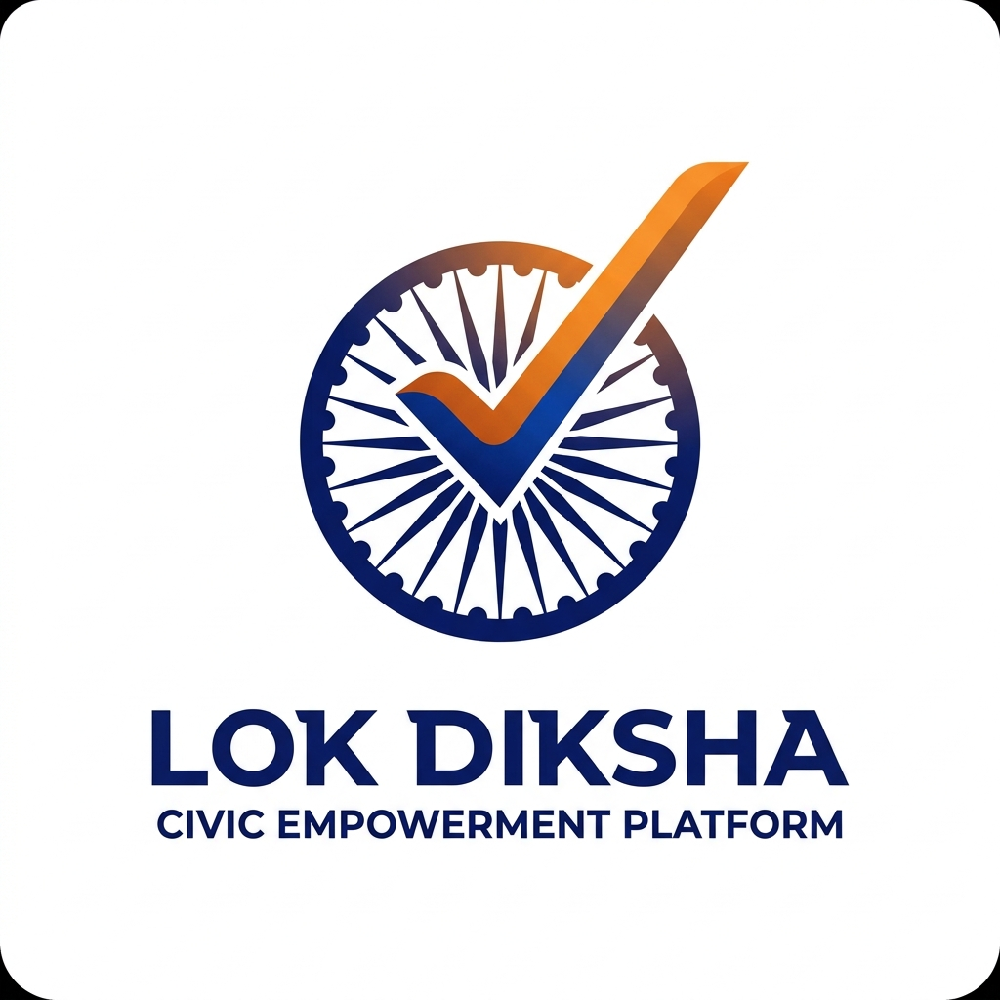
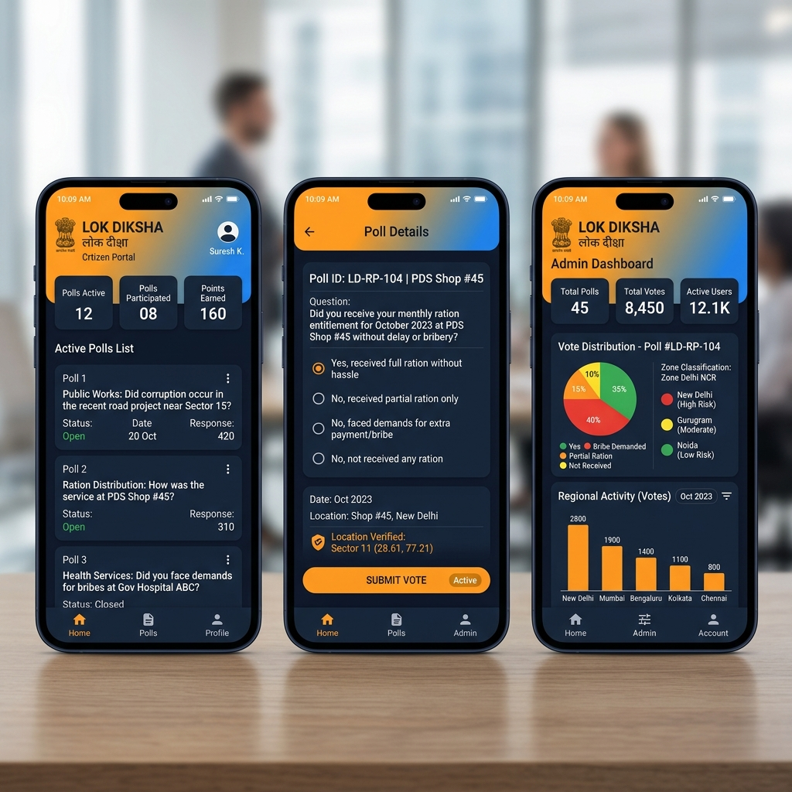

Dr B R Ambedkar National Institute of Technology
Jalandhar (Punjab), India – 144008

LOK DIKSHA
Design Thinking for Industrial Innovation — Open Day of Digital Thinking | 1st Year B.Tech Students
Title of Idea: LOK DIKSHA — Anti-Corruption Citizen Verification Platform for India's Public Distribution System
Problem Statement
- India's PDS serves 81.35 crore beneficiaries under NFSA, yet annual ration diversion is estimated at ₹1 lakh crore.
- Current verification relies on paper-based dealer self-reporting — a fundamental conflict of interest.
- Citizens have no digital mechanism to report non-delivery or short-weighing of rations at Fair Price Shops (FPS).
- District/Block officers lack real-time ground-truth data, making corruption invisible until audits (months later).
- Middlemen exploit this opacity to divert subsidized grains to black markets, depriving the poorest families.
Empathize the User
- NFSA beneficiaries travel kilometers to FPS only to be told "stock not available" — even when supplies were dispatched.
- Illiterate/semi-literate citizens cannot navigate complaint portals or file written grievances.
- Block Development Officers (BDOs) manage hundreds of FPS shops with no real-time monitoring dashboard.
- District Magistrates need actionable intelligence on corruption hotspots for surprise inspections.
- The current system trusts the supply chain — LOK DIKSHA trusts the citizen.
Brainstorming
- SMS-based polling: Rejected — limited text formatting, no GPS verification, expensive at scale.
- Web portal: Rejected — low internet literacy in rural India, no device binding possible.
- IVRS (call-based): Considered — high telecom costs, no GPS, no rich UI.
- WhatsApp chatbot: Considered — no device binding, no geofencing, privacy concerns.
- Chosen → Native Android App with GPS geofencing + PostGIS spatial validation + Supabase OTP Auth.
- Hierarchical poll targeting: State → District → Subdivision → Block → Village.
Objectives
- Build a mobile-first citizen verification platform for PDS ration delivery transparency.
- Implement GPS geofencing (100m radius) — citizens must be physically present at FPS to vote.
- Enforce one-device-one-citizen binding to prevent proxy voting and identity fraud.
- Enable hierarchical poll targeting at District, Subdivision, Block, and Village levels.
- Classify areas into GREEN (>80%), YELLOW (50-80%), RED (<50%) zones for intervention.
- Provide role-based admin dashboard for DMs, SDOs, and BDOs with real-time analytics.
Tech Architecture
📱 Kotlin
Jetpack Compose
Jetpack Compose
→
🔗 Retrofit2
OkHttp
OkHttp
→
⚡ Go (Gin)
REST API
REST API
→
🗄️ PostgreSQL
+ PostGIS
+ PostGIS
- 6-step hardened poll submission: Active check → Option validate → Duplicate detect → LGD eligibility → GPS geofence → Atomic insert.
- 5-level RBAC: State Admin > District Admin > SDO > BDO > Citizen.
- Anti-fraud: Device binding, mock location detection, per-user rate limiting (1 vote/min).
- 20+ premium Jetpack Compose screens with glassmorphism UI and micro-animations.
KotlinJetpack Compose
Go (Gin)PostgreSQL 15
PostGISSupabase Auth
JWTRetrofit2
Prototype
- Citizen Flow: Splash → Role Select → Ration Card Login → OTP → Profile Setup → Dashboard → Vote → History.
- Admin Flow: Officer Login → Dashboard → Create Poll (LGD targeting) → Analytics (Pie/Bar) → Zone Map → Officer CRUD.
- Designed a dual-interface system: Citizen View (polling + history) and Admin Dashboard — each serving a distinct user role.
- Created cascading LGD dropdowns (District → Subdistrict → Village) backed by real Punjab state data (13,000+ villages).

Future Scope
- FCM Push Notifications — Real-time poll alerts when ration stock is dispatched to FPS.
- Multi-language Support — Hindi, Punjabi, and English for wider rural accessibility.
- EPDS Integration — Live stock tracking from government ePoS machines for end-to-end transparency.
- AI Anomaly Detection — Machine learning to flag suspicious voting patterns and bot accounts.
- QR Code Ration Card Scanning — Fast citizen identity verification without manual entry.
- Offline-first Mode — Allow voting in low-connectivity areas with background sync.